[憨笑]不同摄影视角给人的感觉：
男生组：复仇者集结！
女生组：搞快点搞快点~

强者的淡定[害羞] 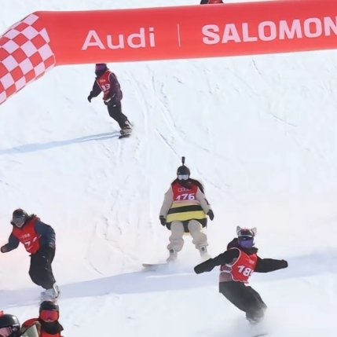
[捂脸] 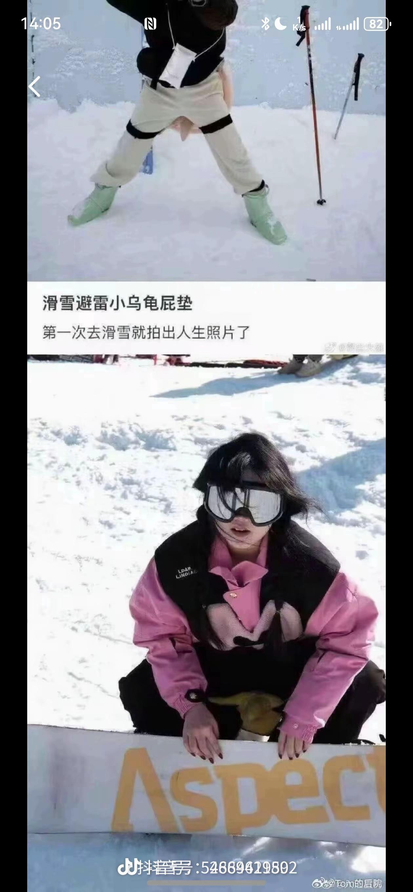
女生组刚出来这个视角，一群人吱吱叫，好可爱呀 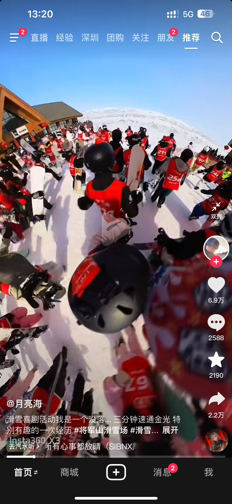
女生组出发像放了五百只鸭子🦆
全程一个姿势，来自强者的冷静吗[发呆]
小蜜蜂我拍到你了[看] 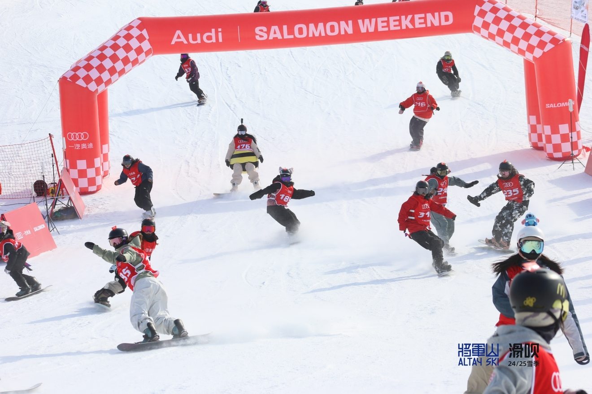
看到后面发现你们真是好龟蜜
感觉像是骑在作者肩上一般
我勒个豆啊 她全程这个很快的姿势冷静得像头牛
…这几乎全程直板了吧[宕机]
你是最稳的，没有左右横甩。随意变道，比那些不守交规的强多了。[赞][赞][赞][赞]
哇姐妹穿板慢慢我以为不熟练呢，结果起来全程直板一点速度都不降，争取最快的速度最短的距离，[赞]太牛了[赞][赞][赞]
女生组好可爱，一边跑一边叫啊～～～[大笑]
她自己穿的破破烂烂却把孩子收拾的干干净净的
最恐怖的是到现在还有人觉得是AI[尬笑]
可爱的没边了[调皮]
真事 就在我附近我能不知道 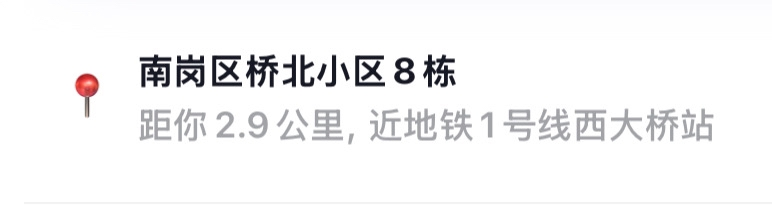
可恶的白猫下次洗锅全给你倒光[微笑] 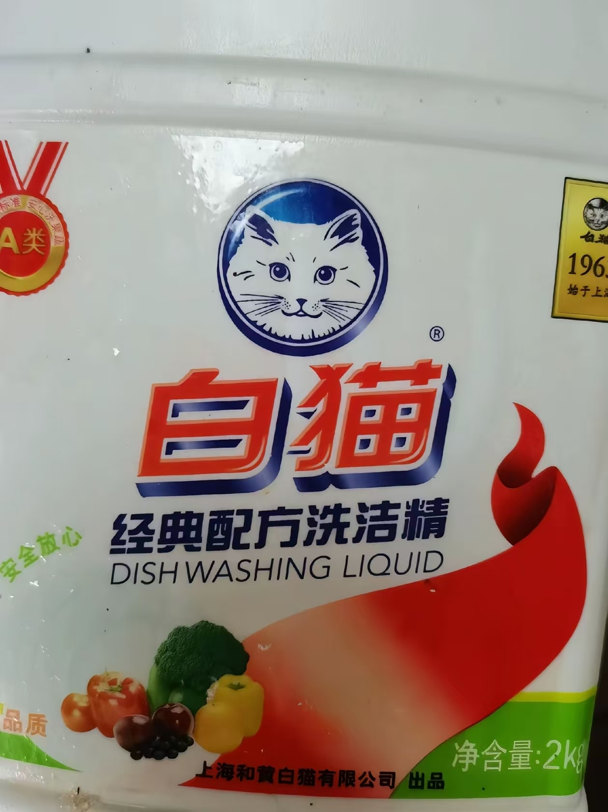
我是剧组的，白猫妈演员本猫挺好的，会给剧组点罐头外卖，小白猫和她特别像，她特别喜欢小白猫。[呲牙]金毛哥和橘猫哥私底下是好朋友，出道前在一家咖啡店打过工。
现在短剧干到猫界了[呲牙]，喜欢看。
我天，欺负小白的就是小白妈的下属[憨笑] 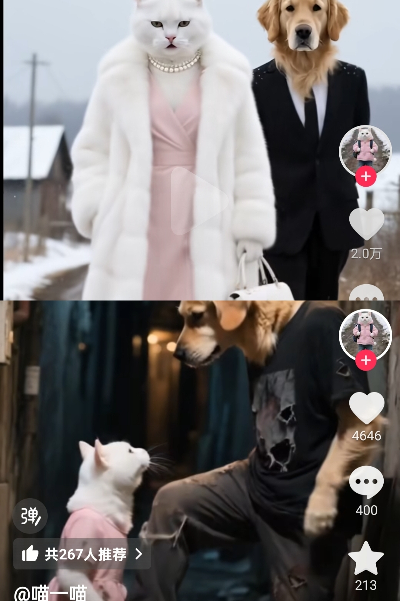
橘爸跟白妈在一起不就行了
我要是小白我就跟有钱妈走，每个月问老妈要一万零花钱，给橘猫爸爸寄八千[呲牙]
跟在后面的金毛大叔挺有气派的。是是个好继父。
我当时也是这样，可惜我的微信步数被发现了
辞职一年不敢跟家人说，还每个月给他们生活费[流泪][流泪][流泪]
这一句：“这些年对食品安全问题严格管控”笑的我眼泪都出来了[捂脸][捂脸][捂脸]
诶 直播查酒驾怎么没呢呢，好难猜哦
摄像头不都抓拍到了吗 下船就不能抓了？
高中生：这是相对运动。 大学生：它踩着一条鱼。
我来告诉你们真相！ 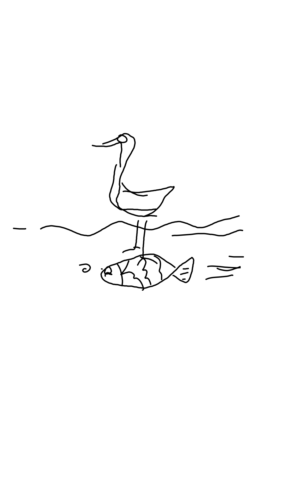
鸟：其实我一动没动，但是有一帮傻鸟以为我在水里高速移动[看] 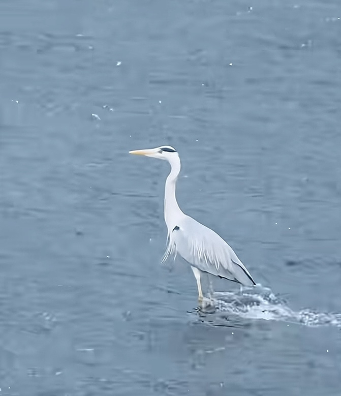
别看它现在高兴，等老了脚脖子疼的时候它就踏实了
我花了1分钟在想这个鸟是怎么会御水而行的，又花了1分钟想明白是水在流动[微笑]
想起了一个经典的问题，风动还是幡动
“相对运动”“参照物”这些词在此刻具象化[看]
《孤独的鸟》 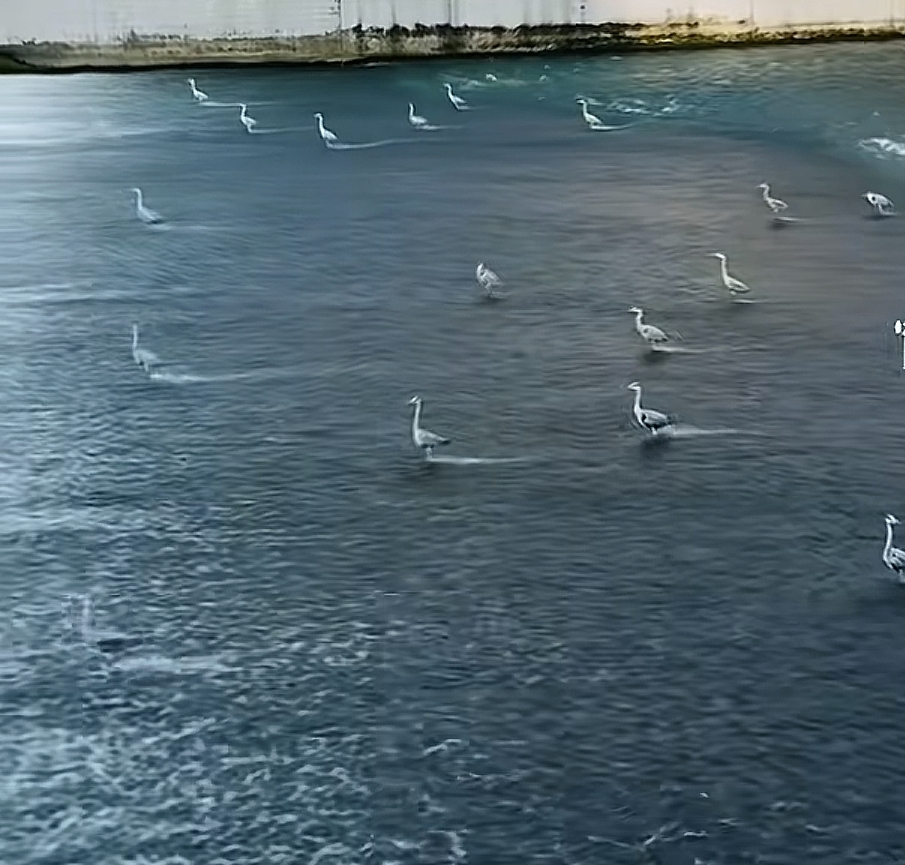
总有人觉得可以滥竽充数，实际上他是不知道指挥的耳朵有多丧心病狂，能一个音一个音的给你揪出来
别以为很简单 指挥的耳朵比勾灵[愉快]
你还别说，我现在每次去听交响乐就喜欢关注这个位置，看他手忙脚乱换各种乐器，得劲儿
我算是看明白了，所以跟敲有关系的都是你……
你好像这个[赞] 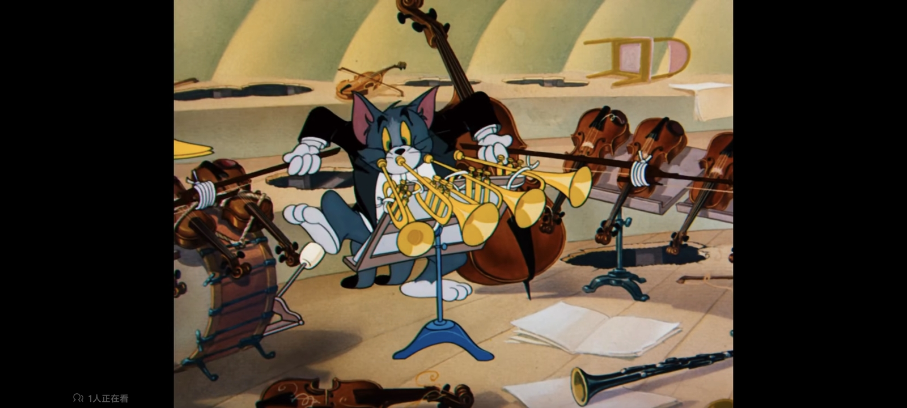
别人拿一个乐器，你拉一车
难怪要坐后面，你这一堆东西在前面占位置
开始以为是躺赢，后来才发现，就你一个牛马................
看过一次民族音乐会，坐在二楼看的，最后一排的表演家，就是这种，时不时弯下腰，从地上掏出一个锤，等会儿又从地上捡一个锣，一晚上就光看他忙活去了[捂脸]
敲那几块巧克力的时候还是有点忙的
知道这里我才发现哥们不是滥竽充数的，是真有东西[捂脸] 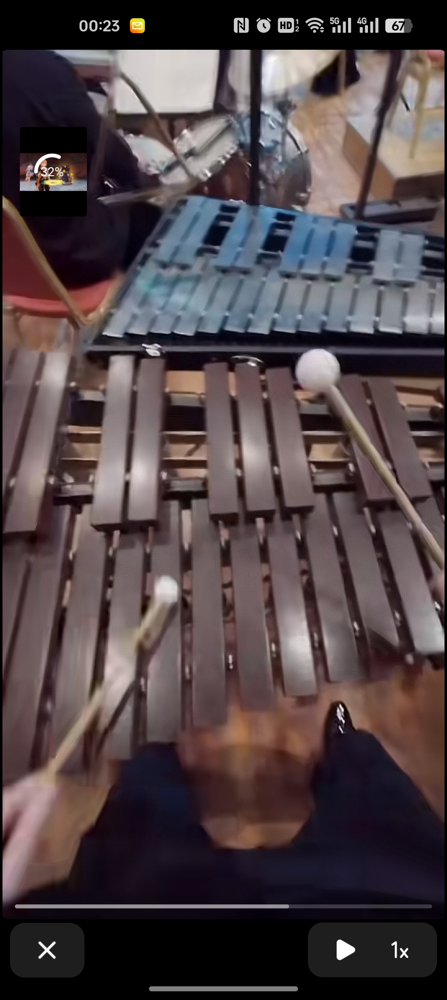
三角铁原来是这么用的啊？我的小学老师骗了我那么久，她都是拿来敲学生头用的[酷拽]
今天先学到这，贪多嚼不烂[干饭人] 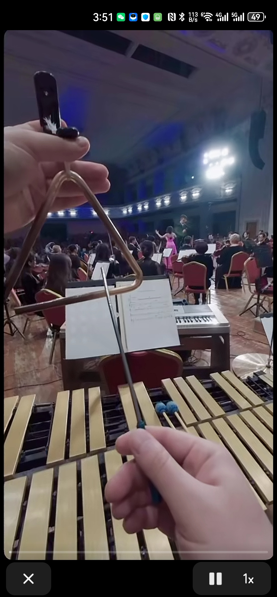
眼瞅着是越来越忙了
直观了解到我女儿在乐团里是干嘛的了，听她说会一大推，木琴 铁片琴 架子鼓 角铁一堆乱七八糟的，原来是这么个事啊[捂脸][捂脸]
刚刚想着应该整个乐队成员最闲的 直到这个出现 惊🙀 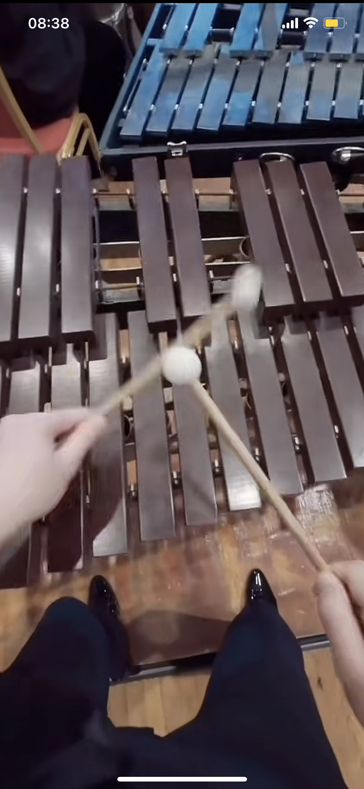
指挥都没有给你明显的手势，你居然知道在哪里叮！好厉害
咱就说……这么大场面，这个三角铁，敲了听得见么[快哭了][快哭了]
说白一点，三角铁掌握了整首曲子的速度，一旦出问题了，整个乐队都有可能崩[憨笑]
我朋友是打击乐的，说有一次去乐团演出，那个曲子就一个三角铁。他等了3分钟，该他了还没进去[尬笑]
天哪，看着你敲我好紧张，万一敲得差了那么点意思😰不会被骂吧。
感觉压力特大。这个敲那个敲，因为声音比较尖啊突出啊，都是关键的Spice。错了又明显，忘了又感觉少了什么…[流泪]
大家适度玩梗[呲牙]学音乐的说句公道话，虽然敲三角铁本身简单，难的是进拍子（在乐团演奏到地方的时候你开始敲）。非专业的其实是很难做到的
看弹幕和评论区感觉国内音乐教育路长道远
你的大皮鞋擦的好亮啊 [看] 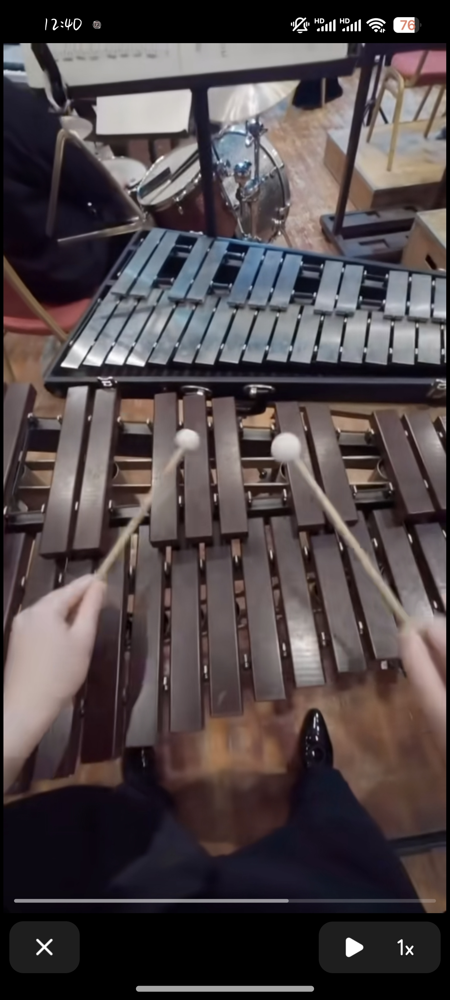
建议烈士家属清明去为烈士扫墓，往返车旅费由当地政府报销[感谢][感谢][感谢][感谢][感谢]
这一吻，吻岀了多少心酸。 这一吻，儿是娘的心头肉。 这一吻，把我也泪流满面。 这一吻，祝老人长命千岁。 这一吻，多少祖国好儿女泪洒异国他乡！！！[感谢][感谢][感谢]
老人这一吻、我哭的. 稀哩哗啦[感谢][感谢][感谢][感谢][感谢][感谢][感谢][感谢][感谢]
一看这个就受不了，眼泪哗哗的[感谢][感谢][感谢][感谢][感谢][玫瑰][玫瑰][玫瑰][玫瑰][玫瑰][玫瑰][比心][比心][比心][比心][爱心][爱心][爱心][爱心]
赶上好时代了，以前哪有黑社会给我唱歌啊[捂脸]
新大将。[泣不成声]
全国人民顶起看司法局的司法[赞][赞][赞]
压力给到高平市司法局
最能吃苦的那一代又投胎回来了
Read more: